Rebuilding the Terraced House: Contemporary spatial norms in the older housing stock
What this research is about
Victorian terraced houses make up more than a third of London's housing stock.According to Valuation Office Agency statistics for 2018, 35% of the dwelling units in London were built before 1900 and 51% before 1939, and most of these were houses. Most have been substantially altered since they were built.According to the 2011 English Housing Survey, 73.5% of dwellings built before 1919 had at least one major alteration, including extensions, rearrangement of internal space, loft conversions, and conversion to more than one dwelling. This research asks what those alterations reveal: if residents are consistently making the same changes, those changes tell us something about what contemporary homes need to provide that current designs do not.
What we found
Floor plans of 120 terraced houses in East London, all built before 1900, were analysed alongside interviews and survey data from London residents. The neighbourhood is in East London, an area that has seen successive waves of gentrification which have accelerated the transformation of older housing stock.Hamnett, C. (2003) Gentrification and the Middle-Class Remaking of Inner London, 1961–2001. Urban Studies, 40(12), 2401–26. Every house in the sample had been extended at the back. Extensions averaged 15 square metres and brought ground floor depths to around 12 metres. In almost every case, the purpose was not to add a room but to enlarge and open up the kitchen: walls between kitchen, dining room, and living room were removed or opened, creating the combined kitchen-living spaces that have since become standard in new-builds.Özer, S. and Jacoby, S. (2022) Dwelling Size and Usability in London: A Study of Floor Plan Data Using Machine Learning. Building Research & Information, 50(6), 694–708. Separate dining rooms had become redundant; sociable kitchens that could accommodate family life and guests had not.Hand, M. and Shove, E. (2004) Orchestrating Concepts: Kitchen Dynamics and Regime Change in Good Housekeeping and Ideal Home, 1922–2002. Home Cultures, 1(3), 245–47. Additional bathrooms and storage were added throughout. Bedrooms were created upward through loft extensions, preserving the original separation between day and night floors.
Alterations are not purely driven by spatial need. Extensions require financial capacity and are subject to planning and permitted development constraints.The Town and Country Planning (General Permitted Development) (England) Order 2015, No. 596 allows back extensions without planning permission subject to depth, height, and volume limits. They are also investment decisions: in an asset-based welfare system, the exchange value of a home is inseparable from its use value.Doling, J. and Ronald, R. (2010) Home Ownership and Asset-Based Welfare. Journal of Housing and the Built Environment, 25(2), 165–73. Real estate guidance routinely lists adding a bathroom, opening the ground floor, and obtaining planning permission for an extension as ways to maintain and increase property value.NAEA Propertymark (2019) 'Doer-Uppers' Spent £48 Billion on Improvements. Homes 'embody the majority of owners' savings and secure the bulk of their debt';Cook, N., Smith, S. J. and Searle, B. A. (2013) Debted Objects: Homemaking in an Era of Mortgage-Enabled Consumption. Housing, Theory and Society, 30(3), 1–19. investment in alterations maintains that value as much as it serves the needs of the household.
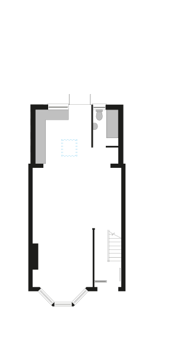
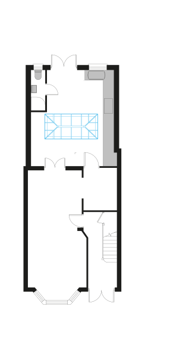
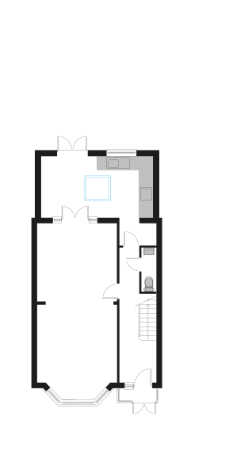
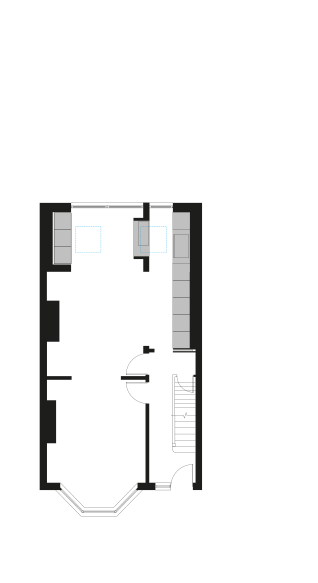
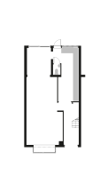
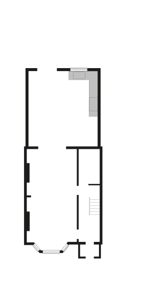

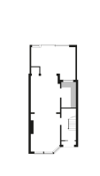
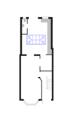
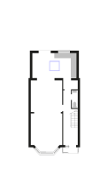
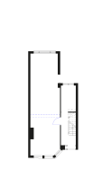
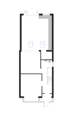
Why the terraced house could absorb these changes
The adaptability of the Victorian terraced house rests on specific design features: space to extend backwards, a double-aspect ground floor, and the arrangement of entrance hall and staircase on one side leaving habitable rooms free on the other. There is much to learn from the existing stock if we want to build homes that can change with the people who live in them.
What this means for housing design
Studying what people change is a direct measure of what designs fail to provide. The terraced house evidence suggests that contemporary households need open sociable kitchens, multiple bathrooms, storage, and the ability to separate activities. Standards specify minimum floor areas; they say little about the conditions that make a home adaptable over time. As extensions accumulate and ground floors deepen, even the terraced house is approaching the limits of what it can absorb. That question has particular urgency now, as the existing stock faces the additional challenge of net zero retrofit.